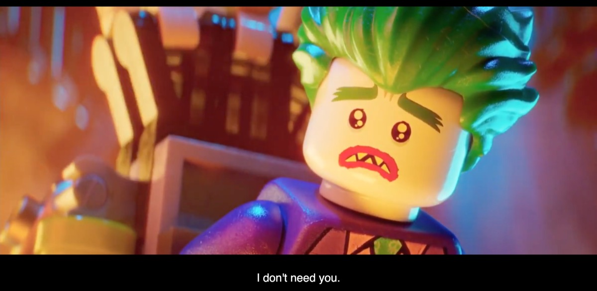
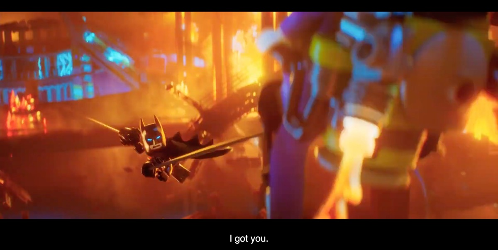
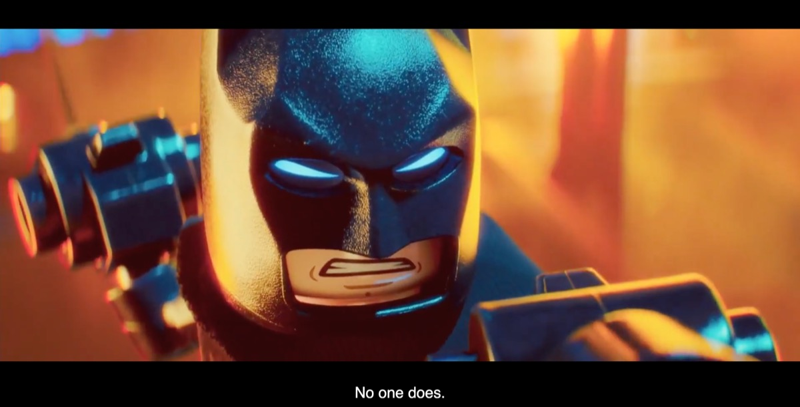
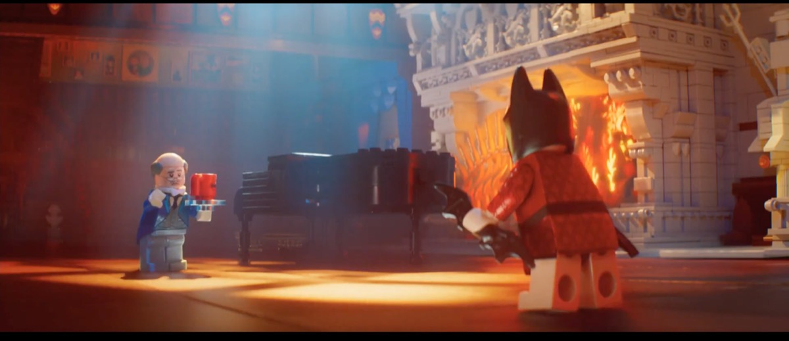
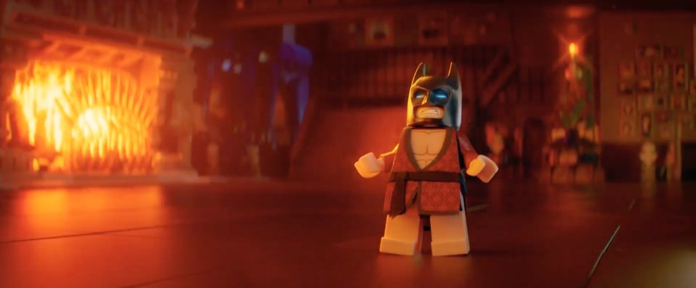

Queering the Hero-Villain Dynamic in The LEGO Batman Movie
The LEGO Batman movie (2017) directed by Chris McKay portrays Batman as a lonely, self-absorbed version of the character, in constant conflict with The Joker, who seeks emotional acknowledgement from Batman. The two characters are shown to be locked in a relationship that closely resembles romantic entanglement. Batman has always been surrounded by queer speculation (Medhurst, 2013). In the 60s, the television show was very campy, shown through bright costumes and colours, paired with humorous and melodramatic writing (Medhurst, 2013). However, recent adaptations, especially Nolan's, have presented Batman as darker, more masculine, and generally more "serious." There is a lack of discourse on the changing interpretations of the character and what it means for the traditionally defined hero-villain tropes (Lendrum, 2005). Flipping the recent narrative, it is relevant to explore how the film's queer-coded, romantic-comedy framing of Batman and Joker reassigns "hero" and "villain" roles, and what this reveals about changing cultural definitions of heroism. Through Sedgwick's (1985) homosocial framework, I will perform close textual analysis of 3 defining scenes that highlight their nuanced relationship and its implications.
This paper draws on Eve Sedgwick's theory of male homosocial desire in examining how the film queers the traditional hero-villain rivalry through parodic and emotionally intimate scenes. Sedgwick (1985) defines male homosocial relations as a spectrum, expressing emotional and power-based bonds between men ranging from friendship and rivalry to erotic attachment. She argues that sustenance of the patriarchal structure depends on these self-affirming male bonds, while 'policing' them through homophobia, setting arbitrary boundaries between camaraderie and taboo homosexual desire. Friendship functions as an outlet for male emotions, rivalry as an outlet for emotional intensity, and erotic attachment as a representation of the repressed desire between men (Sedgwick, 1985). She suggests that this desire is narrative, just as much as it is social. It has shaped stories, producing male characters that suppress vulnerability and project a paternal hierarchy. In many cultural texts, any form of male intimacy is portrayed in the context of aggression or rivalry, remaining culturally 'permissible'. In superhero narratives such as ours, this 'policing' is enacted through routine combat, where emotional intensity is displaced into violence; allowing male intimacy to be felt but never openly acknowledged. Through this lens, Batman and Joker's relationship can be understood as a queer-coded romance in which Batman's rejection of all emotional commitment reinforces their roles as hero and villain. Tracing how film and textual features visualise Sedgwick's continuum between rivalry and desire, this essay strives to reveal how this film redefines heroism as emotional intelligence and vulnerability by manipulating the hero-villain dynamic.
The film manifests the romantically parodic relationship through the queering of typical hero-villain scenes. The first instance of this is the confrontation scene during the setup of this movie (10:15 – 12:00), where Joker tries to blow up Gotham and Batman stops him. It does so by transforming the expected hero-villain confrontation into an emotional rejection. Tearing up, Joker insists that Batman is his "greatest enemy", while Batman dismissively states, "There is no 'us'... I don't need you…You mean nothing to me." This dialogue echoes the defensive tone of a lover's evasion of commitment. This is reinforced visually, through tight shots seen in Figures 1 and 3 that isolate both characters, magnifying their emotional vulnerability (Rooney and Bálint, 2018), and mimicking the intimacy of a rom-com confession. The physical framing of the characters, with Batman's complete control of Joker's movement and position using his grappling hook in Figure 2, parallels the emotional dominance Batman has over Joker, denying him of any real connection. Joker's bowed head casts him as submissive and sad, while Batman's raised head posture does the opposite, framing him as the emotionally dominant figure (Mignault and Chaudhuri, 2003). This reinforces the romantic parody being created between the two. Furthermore, the moonlit skyline casts a sentimental glow, as seen in Figure 1, over what would traditionally be an action standoff. The neon hues and saturation boosted colour palettes offer an antithetical interpretation to Nolan's films, turning brooding masculinity into melodramatic comedy. Within Sedgwick's (1985) framework, these stylised choices materialise the blurring between homosocial rivalry and homoerotic tension. Batman's refusal of Joker's emotional vulnerability is a defence of his classic heteronormative masculinity, illustrating Sedgwick's argument on 'policing' homosocial relationships. The rivalry between them, masquerading as desire, lets us visualise Sedgwick's homosocial continuum, exposing how the performance of heroic detachment relies on denying homosocial intimacy.



In Figure 4, Alfred confronts Batman about his 'greatest fear', which is being part of a family again. This scene highlights the film's critique of repressed masculinity and emotional avoidance. Set within the Batcave, this sequence juxtaposes emotional intimacy against architectural greatness; towering ceilings and empty rooms intensify Batman's detachment from emotionally meaningful relationships. When urged to confront his loneliness, Batman's response, "I don't have any (emotions)… I don't feel anything emotionally except for rage, 24/7, 365, at a million percent" is delivered so dramatically that it elicits the irony in the statement. His emotionless face paired with his physical theatrics serves as a comedic caricature of stoic masculinity (Rooney and Bálint, 2018), once again criticising conventional ideals of masculine heroes. Conversely, Alfred's face is warmly lit, moving calmly towards Batman and symbolically approaching his guarded emotional bubble. His willingness to care signals the strength in emotional courage instead of repression. The visual dynamic contrast between the two characters is representative of Sedgwick's (1985) continuum between homosocial care and repressed desire: Alfred's strong paternal affection trespasses into an intimacy that disrupts Batman's self-image as the invulnerable and stoic hero. The film transforms a quiet exchange of words into an expression of vulnerability, shedding light on how the basis of Batman's heroic persona is rooted in his avoidance of intimacy. Within the framework, the scene reveals his persona as a front for his vulnerability, rendering his masculinity as hollow rather than heroic (Sedgwick, 1985). Alfred's insistence on emotional connection displays a robust expression of masculine strength, building on acceptance rather than avoidance. Through this stark contrast, the film frames emotional honesty as the true meaning of masculine heroism.


The film's ending scene, where Batman and Joker decide to work together to save Gotham, is a direct emotional reversal of the first 'break-up' scene, functioning as a 'confession' scene. Batman admits to the Joker in Figure 7, "You're the reason I get up at 4:00 in the afternoon and pump iron until my chest is positively sick" transforming macho self-discipline into an absurd declaration of affection for Joker. His exaggerated monologue peppered with cheesy romantic lines, mimics the structure of a confession of love while maintaining the use of hostile language. The framing tightens to a two-shot, their faces occupying symmetrical halves of the screen as Batman says, "If you help me save Gotham, you'll help me save us." The shared pronoun marks the first sign of Batman's emotional vulnerability, dismantling the rivalry of hero and villain into co-dependence. The soft orange backlight bathes the pair in warmth and the physical positioning of the characters in Figure 7 parodies typical emotional crescendos of romantic films. When their exchange escalates into "I hate you…I hate you forever," the repetition of hate functions as dramatic irony, echoing Sedgwick's point that patriarchal culture disguises desire as antagonism, preserving masculine power (Sedgwick, 1985). Batman's "I hate you" becomes the film's love confession, queering heroism into emotional interdependence through irony. The scene's balance of parody and sincerity fully embodies Sedgwick's continuum, showing that in confronting intimacy rather than rejecting it, Batman finally becomes a hero capable of feeling.
The film draws on various filmmaking techniques and narrative devices in portraying Batman and Joker's emotional journey. Tight shots, visual contrasts, and colour gradings are used to draw out nuances in both characters' journeys. Furthering the romantic parody, narrative devices and dialogue are utilised in achieving the satirical tone that represents their antagonistic relationship. The 'break-up scene' serves as a catalyst for their emotional rivalry, mirroring romantic conflict. The 'confrontation' scene further develops this idea by reinforcing Batman's emotional isolation as a negative demonstration of his masculinity, while providing a masculine ideal in Alfred's emotionally mature behaviour. Finally, the 'confession' scene resolves Batman and Joker's tension through a parodic romantic declaration. These scenes collectively trace Batman's gradual movement along Sedgwick's homosocial continuum, from denial and repression to recognition and care (Sedgwick, 1985). The results of the analysis show that The LEGO Batman movie queers the superhero myth, not through rejection, but through redefinition. In defining heroism as emotional vulnerability, the movie proposes a new model of heroism grounded in emotional intimacy and acceptance.
Lendrum, R. (2005). Queering Super-Manhood: Superhero Masculinity, Camp and Public Relations as a Textual Framework. International Journal of Comic Art, 7(1), 287–303.
McKay, C. (Director). (2017, February 9). The LEGO Batman Movie. Warner Bros. Pictures.
Medhurst, A. (2013). Batman, Deviance and Camp. University Press of Mississippi EBooks, 237–250. https://doi.org/10.14325/mississippi/9781617038068.003.0020
Mignault, A., & Chaudhuri, A. (2003). The Many Faces of a Neutral Face: Head Tilt and Perception of Dominance and Emotion. Journal of Nonverbal Behaviour, 27(2), 111–132. https://doi.org/10.1023/a:1023914509763
Rooney, B., & Bálint, K. E. (2018). Watching More Closely: Shot Scale Affects Film Viewers' Theory of Mind Tendency But Not Ability. Frontiers in Psychology, 8. https://doi.org/10.3389/fpsyg.2017.02349
Sedgwick, E. K. (1985). Chapter 5. In Between Men: English Literature and Male Homosocial Desire. New York Columbia University Press.